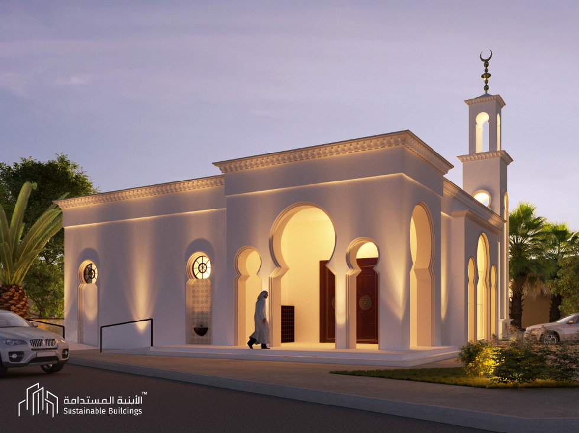

My Role: Contributed to concept development and technical drawings, developed the site plan, and supported 3D modeling. Tools Used: AutoCAD, Revit, Photoshop

Traditional proposal with arches and ornamentation
Traditional proposal with arches and ornamentation
A contemporary interpretation of traditional mosque, blending clean geometric forms with subtle references to Islamic design elements.
Site plan oriented toward the Qibla, integrating solar panels to promote sustainability and energy efficiency.
Preliminary elevation studies examining light and shadow.Conceptual sketches exploring different minaret designs.